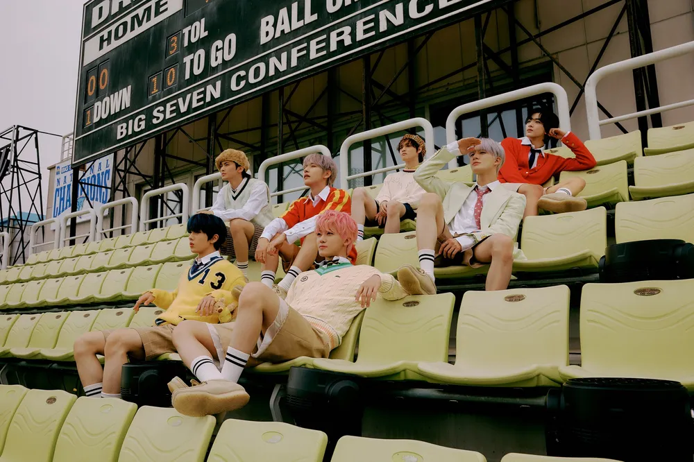

NCT DREAM은 2016년 8월 25일 데뷔한 SM엔터테인먼트 소속 7인조 다국적 보이그룹이며, NCT에서 세 번째로 데뷔한 유닛이다.
“10대들에게 꿈과 희망을, 성인들에게는 힐링을” 주는 것을 포부로 하는 그룹으로, 최초 결성 당시 10대[6] 멤버들로만 이루어져 만 나이 기준 20세가 지나면 졸업하는 로테이션 형식의 청소년 연합팀으로 데뷔하였지만 2020년 4월 14일 기존 체제를 개편하여 데뷔 멤버 그대로 고정 유닛이 되었다.

NCT DREAM은 말 그대로 청소년 연합팀으로, 멤버들 모두 미성년자일 때 데뷔했기에 전부 아주 어렸을 때부터 연습생 생활을 했다. 초등학교, 중학교 등 데뷔 이전의 학창 시절부터 함께해서인지 연예계 진출을 위해 꾸려진 팀이 아닌, 정말 어렸을 때부터 같은 동네에서 함께 자라 마음 맞는 친구들끼리 꿈을 이루기 위해 모인 팀 같다. 멤버들 간 나이 차이도 크지 않고 동생들은 순하고 형들을 잘 따른다. 동갑내기들끼리는 티격태격하고 장난치는 게 여느 또래와 같으며, 형들은 동생들을 귀여워하고 엄격하지 않아서 사이가 좋을 수밖에 없다. 또한 개개인의 분명한 성향 차이에도 불구하고 멤버들끼리 서로를 위하는 마음이나 소통하는 것을 중요시 여기는 것만은 똑같은데 이 때문인지 자주 모여서 "단체 얘기"라고 부르는, 멤버들끼리 진솔하게 대화를 나누는 시간을 가진다고 한다. 멤버들의 언급을 종합해 보면 일 얘기나 가벼운 대화도 많이 하지만 대체로 서로 서운했던 일이나 고쳐야 할 점, 칭찬이나 평소에 못 했던 깊은 이야기 등을 주고 받는다고 한다. '청소년 연합팀'을 모토로 내세운 만큼 만 20세가 지나면 팀에서 나가야 한다는 일명 '졸업 제도'를 전제로 하고 출범한 그룹이다. 즉, 데뷔 당시만 해도 멤버들이 미성년자 상태일 때 잠시 소속되어 거쳐가는 특수한 유닛이었던 것. NCT의 무한 확장 시스템을 가장 적나라하게 보여주는 기획인 셈이다. 특히 '성인이 되면 그룹에서 졸업한다' 라는 콘셉트는 이수만이 H.O.T.를 제작할 당시 구상했던 로테이션 제도와 정확하게 일치한다. SM엔터테인먼트의 오랜 고집이 반영된 기획이라는 것을 알 수 있다. 그래서인지 앞선 두 번의 시도가 팬들의 반대 의견을 받아들여 무위에 그친 데 비해 NCT DREAM의 경우에는 팬들의 반대에도 불구하고 졸업 제도에 따라 실제 맏형인 마크가 성인이 된 후 졸업했다. 그러나 한국의 K-POP 아이돌 팬덤 정서 자체가 이수만이 오랫동안 꿈꿔온 일본 아이돌식 로테이션 제도와는 전혀 맞지 않기도 했고, 칠드림 조합으로 활동을 지속하길 원하는 팬들이 다수였기에 팬덤 내 올팬 기조가 강해지며 이 졸업제도에 대한 팬덤 내 반발이 매우 심했다. 거기다 멤버간 나이 차이가 크지 않은 NCT DREAM의 특수성으로 인해[39] 현 멤버 졸업 이후 바로 활동을 이어나가는 것에 대해서도 비현실적이라는 지적이 있었다. 이는 후술할 체제 개편으로 이어진다.